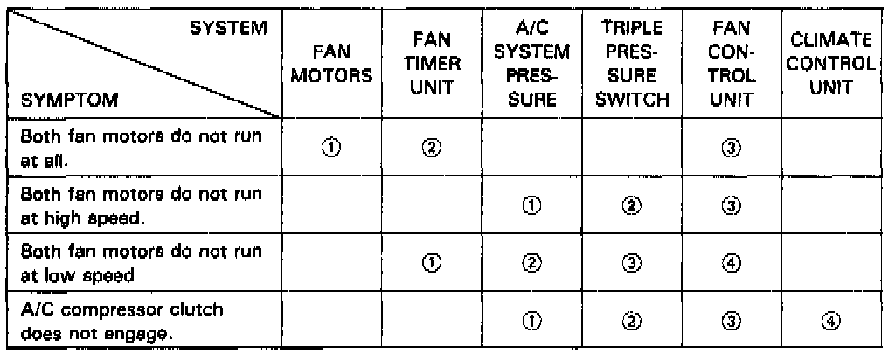

- Symptom Chart
Climate Control Symptom Chart:
Fan And A/C Symptom Chart:

TROUBLESHOOTING REFERENCE CHARTS
Use these charts if the self-diagnosis checks don't identify any cause for the symptom.
Across each row in the charts, the potential sources of a symptom are ranked in the order they should be inspected, starting with [1]. Find the symptom in the left column, read across to the most likely source, then refer to the component or diagnostic flowchart listed at the top of that column. If inspection shows the component is OK, try component [2], etc.